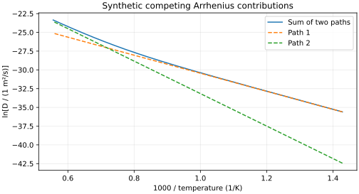

IIT Hyderabad · NPTEL · Independent study edition
Temperature, pressure, and activation parameters
An activation energy extracted from a straight line is a derivative of a measured coefficient. Its interpretation depends on the model behind that coefficient. A vacancy formation cost, migration barrier, changing population, correlation factor and competing pathway can all influence the same slope. Pressure provides a second derivative probe, but its “activation volume” needs equally careful conventions.
Source spine: L19–20, drawing on Chapters 6–8. All explicitly synthetic temperature/pressure data below are original teaching constructions. Source exercise data are treated separately from these constructions, and missing experimental details are not reconstructed from captioned fit coefficients.
9.1 Define the slope before naming its barrier L19 00:21
The familiar Arrhenius form is \(D=D_0\exp[-Q/(RT)]\), with positive diffusivity D, prefactor \(D_0\) in the same units, absolute temperature T in kelvins, gas constant R, and molar activation parameter Q in J mol⁻¹. One can equivalently use a per-particle energy q and Boltzmann constant \(k_B\), with \(Q=N_{\rm Av}q\). Here \(N_{\rm Av}\) is the Avogadro constant, in mol⁻¹. An electronvolt is an energy per event, not an energy per mole; conversion must precede substitution into a molar formula.
Taking a logarithm of a dimensioned quantity is shorthand for choosing a reference unit. Write \(y=\ln[D/D_{\rm ref}]\), with constant \(D_{\rm ref}=1\) m² s⁻¹ in the laboratory plots, and \(u=1/T\). With constant \(D_0,Q\), \(y=\ln(D_0/D_{\rm ref})-(Q/R)u\). Its negative slope times R returns Q. Changing D's units shifts the intercept; using base-ten logarithms changes the slope by a factor \(\ln10\).
For a general positive D, define a local apparent activation enthalpy at fixed pressure by
\[Q_{\rm app}(T,P)\equiv -R\left(\frac{\partial\ln D}{\partial(1/T)}\right)_P =RT^2\left(\frac{\partial\ln D}{\partial T}\right)_P.\tag{9.1}\]The derivative is local even if a straight-line fit averages over a broad interval. Curvature, a phase transition or a changed defect population can make the fitted value depend strongly on the chosen temperatures.
To connect the derivative to thermodynamics, write \(D=A(T,P)\exp[-G^\ddagger(T,P)/(RT)]\), with molar activation free energy \(G^\ddagger\). The prefactor A includes the explicitly retained geometric and kinetic factors. Define \(H^\ddagger=G^\ddagger-T(\partial G^\ddagger/\partial T)_P\). Differentiating gives
\[Q_{\rm app}=H^\ddagger+ RT^2\left(\frac{\partial\ln A}{\partial T}\right)_P.\tag{9.2}\]A constant activation entropy changes the prefactor when \(G^\ddagger=H^\ddagger-TS^\ddagger\); it should not be counted again in A if already retained inside G. Attempt frequencies, lattice spacing, correlations and changing entropies can contribute to apparent slopes. A straight line is evidence for an approximately constant aggregate over the observed range, not a unique microscopic mechanism.
For example, an equilibrium vacancy-mediated host tracer has \(D^*\propto f\ell^2\nu\exp[-(G_f+G_m)/(RT)]\), with molar formation and migration free energies \(G_f,G_m\). Under constant enthalpies and negligible temperature variation of the remaining factors, \(Q_{\rm app}\simeq H_f+H_m\). An imposed dilute interstitial-solute population can instead have \(Q_{\rm app}\simeq H_m\), while equilibrium host self-interstitial transport includes its formation cost. Quenched or irradiated vacancy populations can remove or replace the equilibrium formation contribution. Counting the number of named barriers alone cannot rank carbon and chromium diffusivities in iron; prefactors, actual energies, structures and populations are required.
9.2 Parallel contributions produce a weighted slope L19 04:32
Suppose several statistically additive pathways contribute \(D=\sum_iD_i\), each positive. This sum is an assumed transport model: connected parallel routes sharing a concentration gradient can support it, whereas sequential bottlenecks or slowly exchanging populations may not. Define \(w_i=D_i/D\), so the weights are positive and sum to one. Differentiating the logarithm gives the exact identity
\[Q_{\rm app}=\sum_iw_iQ_{{\rm app},i}.\tag{9.3}\]If every path has constant prefactor and constant molar enthalpy \(Q_i\), its local apparent parameter is \(Q_i\), but the weights still change with temperature. For two paths, equality occurs at \(T_\times=(Q_2-Q_1)/[R\ln(D_{02}/D_{01})]\) when the quotient is positive. The larger barrier can become relevant at higher temperature when accompanied by a larger prefactor.
Take synthetic inputs \(D_{01}=10^{-8}\), \(D_{02}=10^{-5}\) m² s⁻¹ and \(Q_1=100,Q_2=180\) kJ mol⁻¹. The contributions cross at 1392.89654 K. At 800, 1000 and 1600 K, path 2 supplies fractions 0.00594359, 0.06215035 and 0.70974327. The apparent parameters are consequently 100.475487, 104.972028 and 156.779462 kJ mol⁻¹. There is no third elementary barrier with those intermediate values; they describe a temperature-dependent mixture.

A useful original diagnostic follows by differentiating again with respect to \(u=1/T\). For constant \(D_{0i},Q_i\),
\[\frac{d^2\ln D}{du^2} =\frac{\sum_iw_iQ_i^2-(\sum_iw_iQ_i)^2}{R^2}\ge0.\tag{9.4}\]The numerator is the weighted variance of the pathway parameters. Thus this particular additive model produces convex logarithmic Arrhenius curves and a local Q between the component values. Curvature with the opposite sign requires another ingredient, such as varying prefactors, population changes, transitions or a different transport topology. This criterion is conditional on the stated model; it is not a universal shape theorem for every diffusion dataset.
9.3 Activation volume is a pressure derivative L19 07:38
Define the molar apparent activation volume at fixed T by
\[V_{\rm app}\equiv-RT\left(\frac{\partial\ln D}{\partial P}\right)_T.\tag{9.5}\]Pressure P is in pascals, so \(RT\) in J mol⁻¹ multiplied by an inverse-pressure derivative gives m³ mol⁻¹. A per-particle convention uses \(v_{\rm app}=-k_BT\,\partial_P\ln D\), and \(V_{\rm app}=N_{\rm Av}v_{\rm app}\). Mixing these conventions creates an Avogadro-scale error. A positive apparent volume means diffusivity decreases with increasing pressure at fixed temperature; a negative one means the opposite.
For \(D=A\exp[-G^\ddagger/(RT)]\), define the thermodynamic activation volume \(V^\ddagger=(\partial G^\ddagger/\partial P)_T\). Direct differentiation yields
\[V_{\rm app}=V^\ddagger-RT\left(\frac{\partial\ln A}{\partial P}\right)_T.\tag{9.6}\]The activation volume is a derivative between activation and reference states, not the physical specimen volume and not necessarily the volume of a spherical hole. When \(V^\ddagger\) and A are approximately pressure independent over an interval, \(D(P)/D(P_0)=\exp[-V^\ddagger(P-P_0)/(RT)]\). At high pressure or across a structural change, extending that linear free-energy approximation is unjustified.
For a synthetic \(V^\ddagger=4.0\times10^{-6}\) m³ mol⁻¹, or 4 cm³ mol⁻¹, and \(T=1000\) K, one gigapascal changes the activation free energy by 4000 J mol⁻¹. The diffusivity ratio is 0.61810964. The equivalent per-particle volume is \(6.64215627\times10^{-30}\) m³. Its small-looking SI value is not evidence for a negligible pressure effect; the dimensionless quantity \(PV^\ddagger/(RT)=Pv^\ddagger/(k_BT)\) controls the exponential.
For additive paths at fixed temperature, the same logarithmic differentiation gives \(V_{\rm app}=\sum_iw_iV_{{\rm app},i}\). Pressure changes those weights too. Inferring a single migration geometry from an aggregate pressure slope requires evidence that the same pathway remains dominant over the fitting interval.
9.4 Formation volume includes the atom reservoir L19 10:44
Vacancy relaxation and vacancy formation are different volume comparisons. Define \(\Omega\) as the volume per atom in a specified bulk reservoir. Start with a perfect reference crystal containing N sites and atoms. Remove an atom into that reservoir and let the defective N-site crystal relax. Let its volume change relative to the original perfect crystal be \(\Omega_{\rm rel}^v\), the vacancy relaxation volume. The reservoir gains one atom and volume \(\Omega\). The total formation volume under this convention is
\[\Omega_f^v=\Omega+\Omega_{\rm rel}^v.\tag{9.7}\]Inward relaxation often makes \(\Omega_{\rm rel}^v\) negative, but its magnitude and even details of sign are material-dependent. A missing host atom is not a rigid empty sphere with an automatically specified thermodynamic volume.
For a self-interstitial, one atom is taken from the reservoir into the crystal. If the defective crystal's excess volume at fixed original lattice-site reference is \(\Omega_{\rm rel}^i\), the reservoir loses \(\Omega\), giving \(\Omega_f^i=-\Omega+\Omega_{\rm rel}^i\). These expressions define the convention before assigning signs. Different site references or reservoirs require corresponding bookkeeping; the measurable thermodynamic derivative must be compared with the same formation process.
A migration volume compares the saddle configuration and the stable initial defect configuration. For vacancy-mediated transport at equilibrium, the formation and migration contributions add when the rate expression factorizes accordingly. For a solute whose favorable binding lowers its near-solute vacancy formation free energy, a model with \(D_B^*=A_0f_B^*\exp[-(G_f-G_b+G_m)/(RT)]\) gives
\[V_{{\rm app},B}=V_f-V_b+V_m -RT\left(\frac{\partial\ln(A_0f_B^*)}{\partial P}\right)_T,\quad V_b\equiv\left(\frac{\partial G_b}{\partial P}\right)_T.\tag{9.8}\]Binding's minus sign follows the positive-binding-energy convention: favorable \(G_b\) lowers the activation free energy. Its volume derivative need not itself be positive. A pressure-dependent correlation factor can modify the apparent result without changing the list of defect species. Any interpretation should start with the complete defined D expression and then differentiate it, rather than assemble signs from the words “formation” and “binding.”
9.5 Melting-point trends are conditional comparisons L19 18:59
The lecture compares diffusion parameters with melting temperatures. Within related bonding and crystal-structure families, the same energetic scales can influence cohesion and defect barriers, making empirical correlations useful for estimates. They do not establish that every material has the same D at melting, that every FCC solid diffuses more slowly than every BCC solid, or that melting fixes a unique vacancy fraction. Ordering, phase changes, anisotropy and different carriers can defeat a simple trend.
It is especially important to distinguish increasing pressure at fixed T from moving along a melting curve \(T_m(P)\). Let \(D_m(P)=D[T_m(P),P]\). Applying the chain rule and definitions (9.1) and (9.5) gives
\[V_{\rm app} =\frac{Q_{\rm app}}{T_m}\frac{dT_m}{dP} -RT_m\frac{d\ln D_m}{dP},\tag{9.9}\]with the local apparent quantities evaluated on that curve. If D at melting is approximately pressure-independent over the interval, the second term is neglected. Interpreting the remaining Q and V as constant microscopic enthalpy and volume needs the additional single-path/prefactor assumptions. The chain rule itself does not establish empirical constancy of \(D_m\).
For synthetic \(Q_{\rm app}=200\) kJ mol⁻¹, \(T_m=1500\) K and \(dT_m/dP=30\) K GPa⁻¹, neglecting the second term gives \(V_{\rm app}=4.0\times10^{-6}\) m³ mol⁻¹. Converting the pressure unit is essential: the slope is \(30\times10^{-9}\) K Pa⁻¹. This exercise illustrates dimensions and the path derivative; it does not validate constant melting-point diffusivity in a named element.
9.6 Fit data with their units and volume reference L20 28:07
A useful fitting exercise must preserve the data table, temperature scale, pressure units and logarithm convention. A captioned final fit coefficient cannot recover those inputs by itself. Before recomputing the source table below, the companion constructs an explicitly synthetic single path with \(D_0=2.0\times10^{-6}\) m² s⁻¹ and \(Q=150.0\) kJ mol⁻¹:
| T (K) | Synthetic D (m² s⁻¹) |
|---|---|
| 800 | \(3.21533496\times10^{-16}\) |
| 900 | \(3.93936881\times10^{-15}\) |
| 1000 | \(2.92406470\times10^{-14}\) |
| 1100 | \(1.50752185\times10^{-13}\) |
| 1200 | \(5.91326689\times10^{-13}\) |
A least-squares line through \(\ln(D/D_{\rm ref})\) versus \(1/T\) recovers the input prefactor and Q to floating-point precision when full-precision values are used. This verifies implementation and units. It does not estimate experimental error: the values were generated by the same exact law and contain no measurement noise. Real fits need residual inspection, uncertainty propagation and a defensible model for errors in D and T. The intercept can be strongly correlated with the slope over a narrow temperature range.
The synthetic pressure data from §9.3 have \(\ln[D(P)/D(0)]\) slope \(-0.48108942\) per GPa. Equation (9.5) returns 4 cm³ mol⁻¹ only after converting the slope to per pascal. A pressure recorded in GPa while interpreted as Pa changes the inferred volume by a billion.
Recomputed source tutorial, separate from the synthetic test
The selected 720p L20 frame at 28:10 makes the Q14 data table readable. Its temperature dataset is labeled P = 1 atm, and its separate pressure dataset is labeled T = 800 K. The temperature entries are explicitly Celsius; the pressure column is explicitly in units of \(10^5\) Pa. Transcribing those labels gives:
| T (°C) | D (m² s⁻¹) | P (\(10^5\) Pa) | D at 800 K (m² s⁻¹) |
|---|---|---|---|
| 700 | \(7.0\times10^{-20}\) | 0.5 | \(5.0\times10^{-17}\) |
| 800 | \(5.50\times10^{-19}\) | 500 | \(4.60\times10^{-17}\) |
| 900 | \(3.40\times10^{-18}\) | 2500 | \(3.00\times10^{-17}\) |
| 1000 | \(4.20\times10^{-17}\) | 4000 | \(2.50\times10^{-17}\) |
| 1100 | \(2.10\times10^{-16}\) | 5500 | \(2.00\times10^{-17}\) |
After converting the left column by \(T_K=T_{\circ{\rm C}}+273.15\), an unweighted natural-log linear fit gives \(Q=224.879154\) kJ mol⁻¹, \(D_0=5.94642329\times10^{-8}\) m² s⁻¹ and \(R^2=0.98764447\). The regression's slope-based standard error corresponds to 14.521750 kJ mol⁻¹ under the usual independent equal-variance log-residual model. This is a conditional regression statistic from five supplied points, not a reported experimental uncertainty. The largest absolute log residual is about 0.53006, so the points do not exactly follow one Arrhenius line.
Fitting the right-hand dataset at its stated 800 K gives slope \(-1.68466536\times10^{-4}\) per \(10^5\) Pa and \(R^2=0.98928754\). Equation (9.5) gives \(V_{\rm app}=1.12056697\times10^{-5}\) m³ mol⁻¹, or \(v_{\rm app}=1.86074523\times10^{-29}\) m³ per particle. The conditional regression standard error of the molar volume is \(6.73225387\times10^{-7}\) m³ mol⁻¹. The selected 30:10 frame displays the same pressure slope to its shown precision. Its handwritten diffusivity units on that logarithmic slope should be read as a dimensional slip: \(\partial_P\ln D\) has inverse-pressure units. These are source-given exercise data; their originating material, experimental errors and measurement protocol are not established by the table.
Normalizing by an “atomic volume” introduces a second convention. For a crystal with conventional-cell volume \(V_{\rm cell}\) containing n atoms, the actual volume per atom is \(\Omega=V_{\rm cell}/n\), or equivalently molar volume divided by \(N_{\rm Av}\). For ideal hard-sphere FCC, \(a=2\sqrt2r\) and \(\Omega=a^3/4=4\sqrt2r^3\). The geometric sphere volume is \(4\pi r^3/3\); their ratio is the packing fraction \(\pi/(3\sqrt2)\), not one.
With synthetic \(r=0.128\) nm, these two volumes are 0.0118632832 and 0.00878452976 nm³. Dividing an activation volume by the sphere volume gives a larger dimensionless number than dividing by the lattice volume per atom. Neither convention may be silently substituted for the other. The source tutorial uses a sphere-radius construction; a reported fraction of atomic volume must state whether it means that geometric sphere or a thermodynamic volume per atom.
Other L20 checks are distributed where their assumptions are developed: Chapter 6 treats the 0.005/0.05 solute-fraction ambiguity, divacancy abundance and dilatometry; Chapter 7 treats mechanisms and FCC direction counts; Chapter 8 treats the single-vacancy one-dimensional limit, interstitialcy and slow-solute correlation. Their answers follow from models and units, rather than potentially inconsistent captioned option letters.
9.7 Exercises with worked solutions
1. Interpret a temperature-dependent prefactor
Let \(D=A_0T^m\exp[-Q/(RT)]\), with constant \(A_0,m,Q\). Find \(Q_{\rm app}\). How does a vacancy population held fixed by preparation change the usual formation-plus-migration interpretation?
Worked solution
The logarithm is \(\ln A_0+m\ln T-Q/(RT)\), up to the fixed diffusivity reference. Equation (9.1) gives \(Q_{\rm app}=Q+mRT\). The fitted slope includes the prefactor's temperature dependence even though Q is constant. For equilibrium monovacancies, an independent population factor can supply \(H_f\) in addition to \(H_m\). If preparation fixes that population during the experiment, its equilibrium formation exponential does not describe the measured variation; migration and any prefactor/correlation variation may dominate instead. One must establish population kinetics before subtracting enthalpy contributions.
2. Derive the two-path curvature
For constant-prefactor Arrhenius contributions, derive (9.3) and (9.4). Use the synthetic pair to find the apparent Q at 1000 K and explain its meaning.
Worked solution
Since \(dD_i/du=-(Q_i/R)D_i\), differentiating \(\ln\sum_iD_i\) gives \(-\sum_iw_iQ_i/R\). Further differentiation uses \(dw_i/du=-(w_i/R)(Q_i-\sum_jw_jQ_j)\), yielding the weighted variance divided by \(R^2\). At 1000 K the weights are 0.93784965 and 0.06215035, so \(Q_{\rm app}=104.972028\) kJ mol⁻¹. It is the derivative of the aggregate, between the two component values; it is not evidence for a separate 104.972028 kJ mol⁻¹ microscopic saddle.
3. Recover a pressure volume in two conventions
At 1000 K, a synthetic natural-log diffusivity ratio has pressure slope \(-0.48108942\) GPa⁻¹. Infer the molar and per-particle volumes, and predict \(D(1\ {\rm GPa})/D(0)\) under the constant-volume model.
Worked solution
The slope is \(-0.48108942\times10^{-9}\) Pa⁻¹. Multiplying by \(-RT\) gives \(4.0\times10^{-6}\) m³ mol⁻¹. Dividing by \(N_{\rm Av}\) gives \(6.64215627\times10^{-30}\) m³ per particle. The ratio is \(\exp[-(10^9)(4\times10^{-6})/(R\,1000)]=0.61810964\). The per-particle expression with \(k_B\) yields the same result. Using the unconverted per-GPa number would produce a volume a billion times too large.
4. Separate relaxation from formation
A vacancy's defective crystal has relaxation volume \(-0.3\Omega\) relative to the N-atom perfect reference. Under the reservoir convention of §9.4, what is the formation volume? If positive binding free energy enters as \(-G_b\) in the activation free energy, what sign accompanies its volume derivative?
Worked solution
The atom transferred to the reservoir adds \(\Omega\), giving \(\Omega_f^v=\Omega-0.3\Omega=0.7\Omega\). Reporting \(-0.3\Omega\) as the formation volume would omit the reservoir contribution. Differentiating \(G_f-G_b+G_m\) with pressure gives \(V_f-V_b+V_m\), where \(V_b=\partial_PG_b\) can have either sign. Pressure-dependent geometry, attempt rates and correlation add the derivative term in (9.8).
5. Audit a temperature fit
Describe how the synthetic table recovers its prefactor and Q. What changes if the plotted ordinate is \(\log_{10}D\), if Q is inserted in kJ mol⁻¹ with R in J mol⁻¹ K⁻¹, or if temperatures are inserted in Celsius?
Worked solution
Fit \(y=\ln(D/D_{\rm ref})\) to \(b+mu\), \(u=1/T\). Then \(Q=-Rm\) and \(D_0=D_{\rm ref}e^b\), recovering 150,000 J mol⁻¹ and \(2\times10^{-6}\) m² s⁻¹ from full-precision data. A base-ten slope obeys \(Q=-R\ln10\,m_{10}\). A kJ/J mismatch changes the exponential energy scale by a thousand. Celsius is offset from absolute zero, so \(1/T_{\rm Celsius}\) is not an allowed substitution in the thermal law. Exact recovery of synthetic inputs checks the calculation; it does not provide confidence intervals for real measurements.
6. Compare a melting derivative and a volume normalization
Assume D remains constant along a melting curve with local Q of 200 kJ mol⁻¹, \(T_m=1500\) K and \(dT_m/dP=30\) K GPa⁻¹. Infer V. Then explain the difference between hard-sphere and lattice atomic-volume normalization in ideal FCC.
Worked solution
The chain rule gives \(V=(Q/T_m)dT_m/dP=4\times10^{-6}\) m³ mol⁻¹ under the stated constancy assumption. If D along that curve changes, the omitted term is \(-RT_m\,d\ln D_m/dP\). In ideal FCC, \(\Omega_{\rm lattice}=4\sqrt2r^3\), while \(\Omega_{\rm sphere}=4\pi r^3/3\). Their ratio is 0.74048049. A volume fraction normalized by the sphere is therefore larger than one normalized by lattice volume per atom. Both the path of differentiation and the normalization must be named before comparing reported activation volumes.
9.8 Sources and limits
L19 develops temperature, pressure, defect-volume and melting-point comparisons; L20 supplies the tutorial. The chapter derives the local-slope and chain-rule identities explicitly. The Python companion generates the synthetic fits and Figure 9.1, verifies pressure conventions in molar and per-particle units, and compares sphere with lattice volumes. Liquid ink or dissolution demonstrations may contain convection and other transport processes; they motivate temperature sensitivity but do not quantitatively measure solid-state diffusion. Selected source frames at28:10 and30:10 support the explicitly separated Q14 fit. No empirical material ranking follows merely from the number of formation or migration terms in a schematic mechanism.
Python laboratory
Run code/ch09.py. Inputs and scientific limits are specified in the chapter and program.
Complete runnable source
"""Synthetic temperature/pressure fits and activation-volume checks."""
import json
from pathlib import Path
import numpy as np
from scipy.constants import R, Avogadro, Boltzmann
import matplotlib
matplotlib.use("Agg")
matplotlib.rcParams["svg.hashsalt"] = "ch09"
import matplotlib.pyplot as plt # noqa: E402
ROOT = Path(__file__).resolve().parents[1]
def run():
# Exact synthetic inputs, distinct from the source tutorial below.
temperature = np.array([800.0, 900.0, 1000.0, 1100.0, 1200.0])
prefactor, enthalpy = 2e-6, 150e3
diffusivity = prefactor * np.exp(-enthalpy / (R * temperature))
slope, intercept = np.polyfit(1 / temperature, np.log(diffusivity), 1)
recovered_h = -R * slope
recovered_a = np.exp(intercept)
assert np.isclose(recovered_h, enthalpy)
assert np.isclose(recovered_a, prefactor)
path_prefactors = np.array([1e-8, 1e-5])
path_h = np.array([100e3, 180e3])
selected_t = np.array([800.0, 1000.0, 1600.0])
contributions = path_prefactors * np.exp(
-path_h / (R * selected_t[:, None])
)
weights = contributions / contributions.sum(axis=1)[:, None]
apparent_h = weights @ path_h
crossover = (path_h[1] - path_h[0]) / (
R * np.log(path_prefactors[1] / path_prefactors[0])
)
pressure = np.array([0.0, 0.25, 0.5, 0.75, 1.0]) * 1e9
pressure_t, molar_volume = 1000.0, 4e-6
pressure_ratio = np.exp(-pressure * molar_volume / (R * pressure_t))
pressure_slope = np.polyfit(pressure, np.log(pressure_ratio), 1)[0]
recovered_volume = -R * pressure_t * pressure_slope
assert np.isclose(recovered_volume / molar_volume, 1)
per_atom_volume = molar_volume / Avogadro
assert np.isclose(
pressure_ratio[-1],
np.exp(-pressure[-1] * per_atom_volume / (Boltzmann * pressure_t)),
)
radius = 0.128e-9
atomic_volume = 4 * np.sqrt(2) * radius**3
sphere_volume = 4 * np.pi * radius**3 / 3
assert np.isclose(sphere_volume / atomic_volume, np.pi / (3 * np.sqrt(2)))
q_melt, melting_t, melting_slope = 200e3, 1500.0, 30e-9
melting_volume = q_melt / melting_t * melting_slope
grid_t = np.linspace(700, 1800, 301)
paths = path_prefactors * np.exp(-path_h / (R * grid_t[:, None]))
fig, ax = plt.subplots(figsize=(7, 3.8), layout="constrained")
ax.plot(1000 / grid_t, np.log(paths.sum(axis=1)), label="Sum of two paths")
for index in range(2):
ax.plot(
1000 / grid_t,
np.log(paths[:, index]),
linestyle="--",
label=f"Path {index + 1}",
)
ax.set(
xlabel="1000 / temperature (1/K)",
ylabel="ln[D / (1 m²/s)]",
title="Synthetic competing Arrhenius contributions",
)
ax.grid(alpha=0.25)
ax.legend()
fig.savefig(ROOT / "assets/ch09-arrhenius.svg", metadata={"Date": None})
plt.close(fig)
# Transcribed from the inspected L20 1690 s slide, not measured by us.
source_celsius = np.array([700, 800, 900, 1000, 1100], dtype=float)
source_t = source_celsius + 273.15
source_d = np.array([7e-20, 5.50e-19, 3.40e-18, 4.20e-17, 2.10e-16])
source_fit, source_cov = np.polyfit(
1 / source_t, np.log(source_d), 1, cov=True
)
source_residual = np.log(source_d) - np.polyval(source_fit, 1 / source_t)
source_r2 = 1 - np.sum(source_residual**2) / np.sum(
(np.log(source_d) - np.mean(np.log(source_d))) ** 2
)
source_p_units = np.array([0.5, 500, 2500, 4000, 5500])
source_p = source_p_units * 1e5
source_pd = np.array([5e-17, 4.60e-17, 3e-17, 2.50e-17, 2e-17])
source_pfit, source_pcov = np.polyfit(
source_p, np.log(source_pd), 1, cov=True
)
source_p_residual = np.log(source_pd) - np.polyval(source_pfit, source_p)
source_pr2 = 1 - np.sum(source_p_residual**2) / np.sum(
(np.log(source_pd) - np.mean(np.log(source_pd))) ** 2
)
source_volume_molar = -R * 800 * source_pfit[0]
source_volume_atom = -Boltzmann * 800 * source_pfit[0]
return {
"scope": "Synthetic examples plus labeled source tutorial data",
"source_tutorial": {
"source_frame": "L20 at 1690 s, inspected 720p",
"temperatures_C": source_celsius.tolist(),
"D_temperature_m2_per_s": source_d.tolist(),
"Q_kJ_per_mol": -R * source_fit[0] / 1000,
"D0_m2_per_s": np.exp(source_fit[1]),
"Q_fit_standard_error_kJ_per_mol": R
* np.sqrt(source_cov[0, 0])
/ 1000,
"temperature_log_residuals": source_residual.tolist(),
"temperature_fit_R_squared": source_r2,
"pressure_temperature_K": 800,
"pressures_in_1e5_Pa": source_p_units.tolist(),
"D_pressure_m2_per_s": source_pd.tolist(),
"pressure_slope_per_1e5_Pa": source_pfit[0] * 1e5,
"pressure_fit_R_squared": source_pr2,
"activation_volume_m3_per_mol": source_volume_molar,
"activation_volume_m3_per_particle": source_volume_atom,
"volume_fit_standard_error_m3_per_mol": R
* 800
* np.sqrt(source_pcov[0, 0]),
"pressure_log_residuals": source_p_residual.tolist(),
},
"R_J_per_mol_K": R,
"single_path": {
"temperatures_K": temperature.tolist(),
"D_m2_per_s": diffusivity.tolist(),
"recovered_prefactor_m2_per_s": recovered_a,
"recovered_enthalpy_J_per_mol": recovered_h,
},
"two_path": {
"temperatures_K": selected_t.tolist(),
"weights": weights.tolist(),
"apparent_enthalpy_kJ_per_mol": (apparent_h / 1000).tolist(),
"crossover_temperature_K": crossover,
},
"pressure": {
"temperature_K": pressure_t,
"pressures_GPa": (pressure / 1e9).tolist(),
"D_over_D_at_zero_P": pressure_ratio.tolist(),
"recovered_volume_m3_per_mol": recovered_volume,
"per_atom_volume_m3": per_atom_volume,
"slope_per_GPa": pressure_slope * 1e9,
},
"fcc_volume_example": {
"radius_nm": radius / 1e-9,
"lattice_volume_per_atom_nm3": atomic_volume / 1e-27,
"hard_sphere_volume_nm3": sphere_volume / 1e-27,
"ratio": sphere_volume / atomic_volume,
},
"melting_curve_volume_m3_per_mol": melting_volume,
}
if __name__ == "__main__":
print(json.dumps(run(), indent=2))
Recorded execution output
{
"scope": "Synthetic examples plus labeled source tutorial data",
"source_tutorial": {
"source_frame": "L20 at 1690 s, inspected 720p",
"temperatures_C": [
700.0,
800.0,
900.0,
1000.0,
1100.0
],
"D_temperature_m2_per_s": [
7e-20,
5.5e-19,
3.4e-18,
4.2e-17,
2.1e-16
],
"Q_kJ_per_mol": 224.8791536491069,
"D0_m2_per_s": 5.9464232896103296e-08,
"Q_fit_standard_error_kJ_per_mol": 14.521749985679968,
"temperature_log_residuals": [
0.3250862355031501,
-0.20334183146348295,
-0.5300596220106755,
0.1729869985885344,
0.23532821938248105
],
"temperature_fit_R_squared": 0.9876444692626589,
"pressure_temperature_K": 800,
"pressures_in_1e5_Pa": [
0.5,
500.0,
2500.0,
4000.0,
5500.0
],
"D_pressure_m2_per_s": [
5e-17,
4.6e-17,
3e-17,
2.5e-17,
2e-17
],
"pressure_slope_per_1e5_Pa": -0.00016846653566119363,
"pressure_fit_R_squared": 0.9892875420459865,
"activation_volume_m3_per_mol": 1.1205669705318193e-05,
"activation_volume_m3_per_particle": 1.8607452319527308e-29,
"volume_fit_standard_error_m3_per_mol": 6.732253874846268e-07,
"pressure_log_residuals": [
0.01963007648907933,
0.020397502112800225,
-0.07011344139176146,
0.00026480530608097297,
0.02982105748365882
]
},
"R_J_per_mol_K": 8.31446261815324,
"single_path": {
"temperatures_K": [
800.0,
900.0,
1000.0,
1100.0,
1200.0
],
"D_m2_per_s": [
3.215334963541827e-16,
3.93936881164111e-15,
2.92406469777097e-14,
1.5075218502471605e-13,
5.913266885368222e-13
],
"recovered_prefactor_m2_per_s": 1.99999999999998e-06,
"recovered_enthalpy_J_per_mol": 149999.99999999994
},
"two_path": {
"temperatures_K": [
800.0,
1000.0,
1600.0
],
"weights": [
[
0.9940564076228554,
0.005943592377144507
],
[
0.9378496456634627,
0.0621503543365373
],
[
0.2902567256806796,
0.7097432743193204
]
],
"apparent_enthalpy_kJ_per_mol": [
100.47548739017155,
104.972028346923,
156.77946194554562
],
"crossover_temperature_K": 1392.8965365483912
},
"pressure": {
"temperature_K": 1000.0,
"pressures_GPa": [
0.0,
0.25,
0.5,
0.75,
1.0
],
"D_over_D_at_zero_P": [
1.0,
0.8866789123554027,
0.7861994936157599,
0.6971065118935904,
0.6181096437616773
],
"recovered_volume_m3_per_mol": 4.000000000000001e-06,
"per_atom_volume_m3": 6.642156268695386e-30,
"slope_per_GPa": -0.4810894201709042
},
"fcc_volume_example": {
"radius_nm": 0.128,
"lattice_volume_per_atom_nm3": 0.011863283203031443,
"hard_sphere_volume_nm3": 0.008784529755548188,
"ratio": 0.740480489693061
},
"melting_curve_volume_m3_per_mol": 4e-06
}